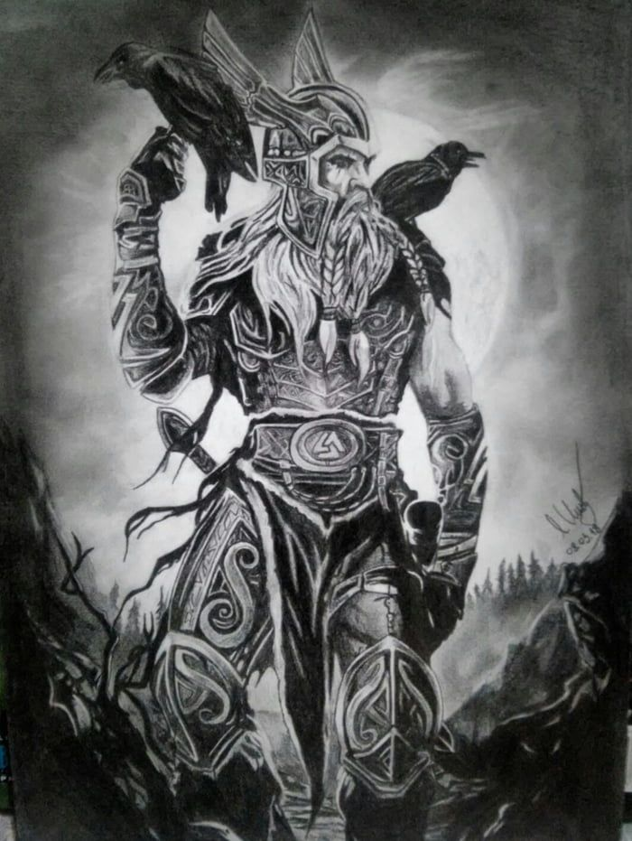

Norse Mythology
The 10 Best Norse Mythology Books
There are so many books on Norse mythology out there, especially at the beginner level, that if you were to make a pile with one copy of each it would probably reach all the way up to Asgard itself. Trying to decide where to start – or where to go next from your current position, wherever that is – can be daunting. In hopes of helping people to navigate this field and get to the good stuff, here’s a list of 10 of the best books on Norse mythology (last updated April 2019).
This list is written primarily with the beginner or intermediate student of Norse mythology in mind, although some of the more specialized books in this list will be of great use to those who are already familiar with the basics of the ancient mythology and religion of the Norse and other Germanic peoples and want to go further.
The order of the books in this list runs roughly from the most newbie-friendly to the most advanced. The lower-numbered books aren’t necessarily better than the higher-numbered ones, but the lower-numbered ones are more accessible
If you find this list to be helpful enough that you decide to buy one or more of the books listed here, the best way you can say “thank you” is to buy whatever you decide to buy through the Amazon links provided at the end of each book’s description. When you do, I automatically get a small commission on your purchase with no extra cost or hassle for you whatsoever.
1. The Viking Spirit: An Introduction to Norse Mythology and Religion by Daniel McCoy
The Viking Spirit is an introduction to Norse mythology like no other. As you’d expect from the creator of this enduringly popular website, it’s written to scholarly standards, but in a simple, clear, and entertaining style that’s easy to understand and a pleasure to read.
It includes gripping retellings of no less than 34 epic Norse myths – more than any other book in the field – while also providing an equally comprehensive overview of the fascinating Viking religion of which Norse mythology was a part. You’ll learn about the Vikings’ gods and goddesses, their concept of fate, their views on the afterlife, their moral code, how they thought the universe was structured, how they practiced their religion, the role that magic played in their lives, and much more. The book gives equal weight to the nonfiction, historical material and the stories.
With its inclusion of the latest groundbreaking research in the field, The Viking Spirit is the ultimate introduction to the timeless splendor of Norse mythology and religion for the 21st Century.
Click here to view or buy The Viking Spirit at Amazon.
2. Norse Mythology by Neil Gaiman
In Norse Mythology, acclaimed fiction writer Neil Gaiman sets out to retell a selection of the Norse myths that have served as a substantial source of inspiration for many of his earlier works, perhaps most notably the very popular novel American Gods
Although Gaiman retells only a few of the dozens of surviving Viking myths, his choices include almost all of the most important ones, such as the creation of the universe and its cataclysmic downfall, as well as some that are particularly odd and funny. And by limiting himself to a particular portion of the myths, he’s able to flesh out those myths in a grand, novelistic form, which is perhaps the book’s greatest strength. It turns some of the greatest stories in world literature into a great modern novel in its own right.
The only downside for some prospective readers will be that Norse Mythology doesn’t have much of a discussion of the Norse religion from which the myths arose. But if you’re only interested in the stories, it’s hard to beat this book, and if you want more than just the stories, you can always round out the picture by also reading another one of the books on this list that include more of a nonfiction, historical discussion of the religion. I’ve heard from many people that Norse Mythology and The Viking Spirit complement each other particularly nicely.
Click here to view or buy Norse Mythology at Amazon.
3. The D’Aulaires’ Book of Norse Myths by Ingri and Edgar Parin d’Aulaire
If you’re a parent looking for a book on Norse mythology for your child, The D’Aulaires’ Book of Norse Myths is easily the best book on Norse mythology for children. There’s not even a close second. The D’Aulaires’ Book of Norse Myths is specifically written for ages 5-9, or kindergarten through fourth grade.
Lovingly and evocatively written and very easy to understand, these retellings of the Norse tales and descriptions of the gods and their world are sure to fire your child’s imagination and get him or her interested in Norse mythology. Numerous color pictures are interspersed throughout the text. It’s also completely “family-friendly” – the d’Aulaires exclude the lurid elements of Norse mythology that some parents might find objectionable in their children’s reading material.
Click here to view or buy The D’Aulaires’ Book of Norse Mythsat Amazon.
4. Gods and Myths of Northern Europe by H.R. Ellis Davidson
Hilda Roderick Ellis Davidson was one of the twentieth century’s foremost scholars of Norse mythology, yet most of her works were written for a general audience rather than just her fellow academic specialists. Gods and Myths of Northern Europe is her most accessible work, and is ideal for beginners who want a scholarly take on Norse religion.
Her book describes the pre-Christian religion of the Norse and other Germanic peoples in a manner that focuses less on retelling the tales than on the historical religion of which the tales were only one part. The reader comes away with a picture of pre-Christian Germanic religion that’s more thorough and nuanced than just about any other one-volume popular introduction to this topic or similar ones. For decades, Gods and Myths of Northern Europe has justifiably been one of the most widely-read books on the Viking Age.
Click here to view or buy Gods and Myths of Northern Europe at Amazon.
5. Myth and Religion of the North: The Religion of Ancient Scandinavia by E.O.G. Turville-Petre
Much like Ellis Davidson’s Gods and Myths of Northern Europe (#4 above), legendary Oxford Old Norse professor E.O.G. Turville-Petre’s Myth and Religion of the North provides a comprehensive overview of the pre-Christian religion of Scandinavia. However, while somewhat more academic than Ellis Davidson’s book (which is why I listed Gods and Myths of Northern Europe as #4 and Myth and Religion of the North as #5), Turville-Petre more than makes up for this with his sheer comprehensiveness and acuity of insight. Where Ellis Davidson is highly admirable, Turville-Petre is downright astonishing.
In numerous universities across the world today, Myth and Religion of the North is treated as the go-to reference book for all things related to Norse mythology, and with good reason. Reading this book is something like an intellectual initiation. To put it simply: until you’ve read this absolutely essential book, you’re just a dabbler in Norse mythology.
The Ultimate Online Guide to Norse Mythology and Religion
